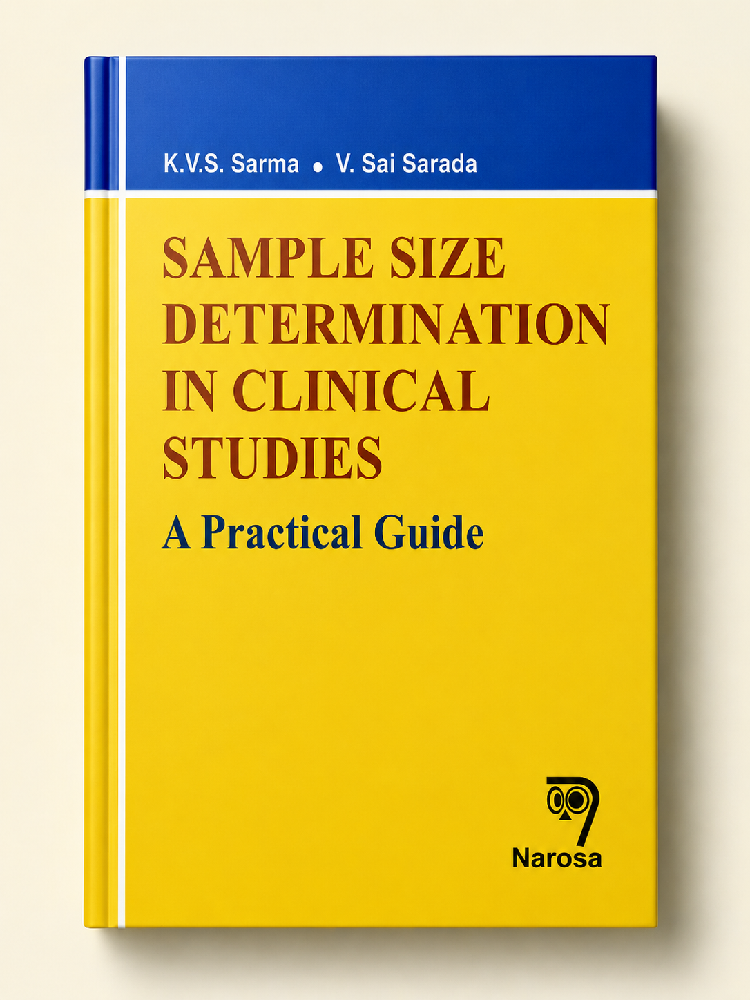

Book & Calculator Overview
This calculator is based on the practical formulas from "Sample Size Determination in Clinical Studies: A Practical Guide (ISBN 978-81-8487-807-3)" by K.V.S. Sarma and V. Sai Sarada. It brings the book’s guidance online so researchers can quickly estimate sample sizes for proportions, means, comparing groups, paired comparisons, diagnostic accuracy, correlation studies, and survival analysis.
The book itself focuses on clinical research sample size planning, offering detailed explanations of assumptions and formula choices. The calculator simplifies the process by letting you enter study parameters and see the required sample sizes instantly.
Statistics Correspondence
Dr K. V. S. Sarma
Statistics Consultant -- Hyderabad,Telangana,India.
Former Professor of Statistics Sri Venkateswara University, Tirupathi.
Former Biostatistician Sri Venkateswara Institute of Medical Sciences
Tirupathi,AndhraPradesh,India.
Dr. V. Sai Sarada
Biostatistician
Department of Research Labs
Asian Health Care Foundation, AIG Hospitals
Hyderabad, Telangana, India.
Website Correspondence
Abhyuday Suraparaju
Software Developer
Specializations: Python Programming, AI/ML, Data Science